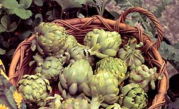
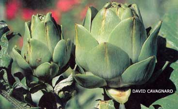

But these rigid requirements changed when a new variety, `Imperial Star,' became available in the late 1990s. An annual artichoke that is started from seed in early spring, it produces edible buds about 90 days after transplants are set out, much like tomatoes and peppers. Now anyone, anywhere, can have an artichoke patch for fresh eating or even canning.
Buttery, with a nutty flavor, artichoke hearts have long been regarded as elegant additions to salads, as topping for sauteed fish and as toothsome appetizers when dressed with vinegar, olive oil and herbs. The whole artichoke bud is best steamed and served with a dipping sauce of garlic-flavored, melted butter or mayonnaise. To eat it, grasp the pointed end of each petal of the bud and pull it off. Then dip the petal bottom in the sauce and rake it over your teeth to dislodge the meaty pulp at the base.
When most of the large petals have been consumed, cut away all remaining ones, and scoop out the hairy materials in the bud base to reveal the meaty artichoke heart. It can be cut into pieces and dipped into the remaining sauce. Eating an artichoke is almost a social event: time-consuming, but well worth the effort.
Until `Imperial Star' was developed, artichokes grown from seed usually did not produce buds in their first year, and if they did, the buds were small and of poor quality. For this reason artichokes were usually sold as root divisions or offsets. But annual `Imperial Star' produces big crops immediately from seed and doesn't require as much chilling or vernalization as perennial varieties, such as `Green Globe' and `Violetto.'
Vernalization is the process of chilling seeds or crowns at temperatures between 34 degrees and 50 degrees, which causes plants to flower earlier. Perennial artichokes require 500 hours or more of vernalization. Temperate climates with long springs usually provide this naturally. But when the climate doesn't, dormant plants can be artificially chilled in the refrigerator for 500 to 600 hours if your area has a short growing season (less than 120 days) or if spring heats up fast.
`Imperial Star' needs only 200 hours of vernalization, so you can simply chill seeds in the refrigerator for two weeks before starting your transplants. Soak them overnight in water, drain and place in a jar filled with moist sand before refrigerating. Or you can vernalize them naturally by setting your seedlings outside in a cold frame or other protected area while the temperature is in the 34-degree-to-50-degree range for a week or more. Bring them inside or protect them when temperatures dip below freezing. This natural process produces bigger artichoke bud yields. Plants and seeds that are artificially vernalized in the refrigerator will form chokes faster, but the total number of chokes per plant will be less than from naturally vernalized plants.
Select a planting site that is in full sun and has well-drained soil and lots of organic matter. Most ground that is heavily amended with compost and other humus will have the right acidity level. Set transplants, offsets and juvenile plants out after the soil temperature is 50 degrees or higher, and the danger of frost is gone. Make sure the soil is loosened to at least 12 inches in depth, so taproots can be positioned straight down. Space plants widely, since they will eventually grow to 5 feet in height and more than 40 inches in width. If the climate is hot, mulch plants thickly to keep the soil cool. If soil temps exceed 85 degrees, plants will go into summer dormancy, and they will not produce buds.
Top dress with slow-release fertilizers such as compost, well-rotted manure, fish meal pellets, or cottonseed meal and green sand. Artichokes are heavy feeders, so be liberal. A steady supply of moisture is necessary, too. Make sure the planting bed has been amended with organic materials to create a well-drained soil. Artichoke plants will rot if their roots sit in water and stop growing if there is no soil moisture. Soaker hoses or drip emitter systems underneath mulch are the easiest and most efficient way to provide an even amount of water.
Artichokes have few pests, other than aphids and rabbits. Strong sprays of water or insecticidal soap will control aphids, and 2-foot-high chicken wire cages around young plants will deter rabbits. Remove the cages as plants grow. When plants reach their mature height, a terminal bud will form. It's the largest and first to mature on the plant. Side shoots will produce more buds, which are smaller and ripen later. Harvest before the buds start to open-a tight bud with waxy petals is ideal. Artichoke buds can be stored in the refrigerator for up to two weeks, but they are at their best when eaten shortly after picking.
After you have had your fill of feasting on fresh artichokes (and canning or freezing the hearts) let some of the buds open to flower. Not only are they a dazzling bluish lavender, but they are magnets for pollinating insects, such as bees and butterflies. The striking flowers are gorgeous in bouquets or dried, fall floral arrangements. Let the flowers dry naturally on plants. Florists pay premium prices for fresh and dried artichoke flowers, so you might consider the plants for a cash crop, if they grow easily for you. These gourmet thistles offer much to the gardener who plants them. So go ahead: Order seeds and start planning a few artichoke adventures of your own.
|
 Imagine an abundance of artichokes from your own garden. Below: Artichokes' dazzling color makes them appealing to florists. |
A steady supply of moisture is essential to raise healthy artichokes |
 Thanks to the new `Imperial Star' variety, anyone, anywhere, can have an artichoke patch for fresh eating. |
|
|
|
|